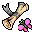

蝶の巻物 Scroll of butterflies
英語版 CrawlWiki の記事「Scroll of butterflies」(0.30 向け、2023-11-10 版)の翻訳です。原文の著者は編集履歴をご覧ください。
この記事は 0.30 の時点の内容で、最新の 0.34 とは違うところがあるかもしれません。
| 種類 | 巻物 |
|---|---|
| 名前 | 蝶の巻物 |
| アイコン |  |

| 使い手の周りを美しい蝶の群れで包み、その羽ばたきで近くの他の生き物を吹き飛ばす巻物だ。 |
蝶の巻物を読むと、味方の蝶が大量に現れる。自分から半径 2 マス以内に 16〜22 匹、半径 5 マス以内に 12〜28 匹の蝶が置かれる。[1] さらに、近くの敵をノックバックする。
この巻物は召喚の巻物と入れ替わりで出る。1 回のゲームでは、どちらか一方しか生成されない。
小技
- 蝶は攻撃をさえぎったり、敵の気をそらしたりするのが得意だ。ただし蝶は回避が高いので、それが良くも悪くも働く。たとえば射撃武器を持ったモンスターの攻撃が蝶に外れて、結局あなたに当たることもある。
- 巻物が敵を吹き飛ばしてくれるので、機会攻撃を受けずに敵から離れられる。
- ほかの召喚物と同じく、蝶にも焼き討ちの巻物が効く。ただし蝶はでたらめに飛び回るので、炎の爆発をいくつか顔面にくらう危険はいつもつきまとう。
変更履歴
- 0.30 より前は、蝶の巻物は召喚の巻物ではなく煙幕の巻物と入れ替わりで出ていた。今より出やすかったが、出てくる蝶は少なく(全部で 10〜20 匹)、敵をノックバックすることもなかった。
- 蝶の巻物は 0.29 で追加された。削除された呪文胡蝶の召喚と同じ効果だが、巻物のほうが多くの蝶を呼び出す。
出典
- ↑ spl-summoning.cc:1058 (0.30.0)
| 巻物 |
|---|
| 獲得 • 忘却 • 蝶 • 瞬間移動 • 魔力の武器 • 防具強化 • 武器強化 • 恐慌 • 煙幕 • 鑑定 • 焼き討ち • 騒音 • 毒 • 啓示 • 静寂 • 召喚 • テレポート • 拷問 • 脆弱 |